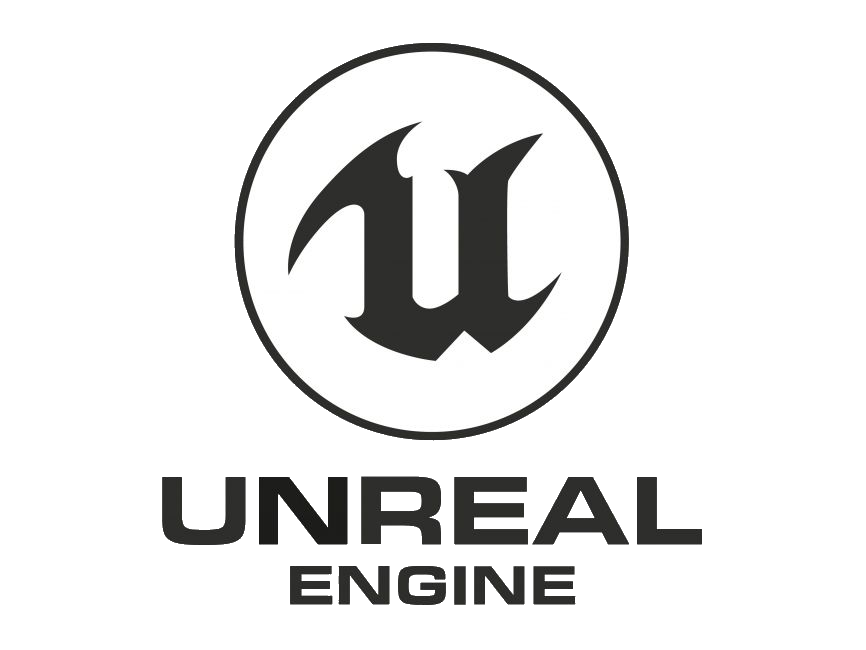
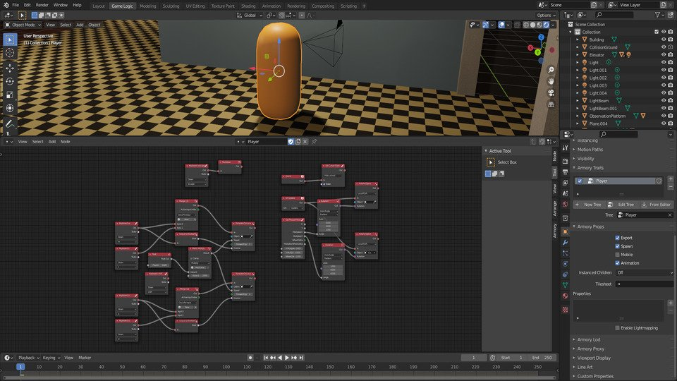
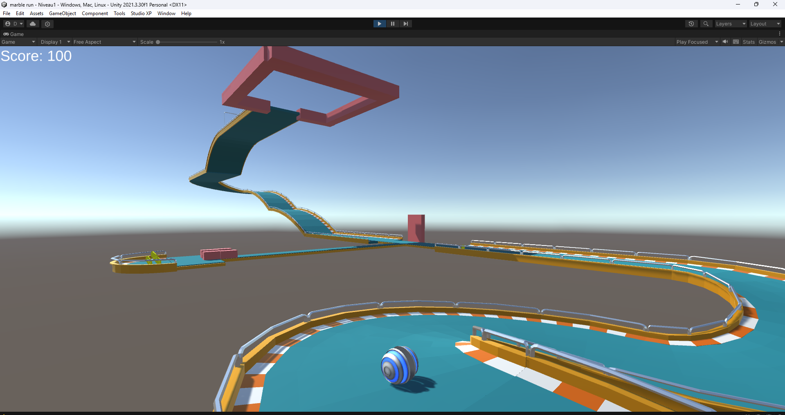
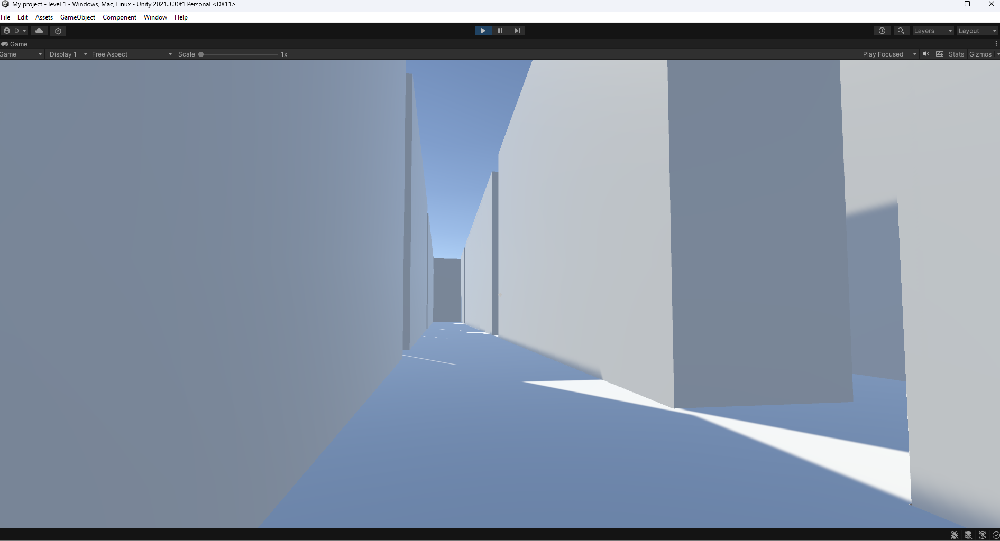
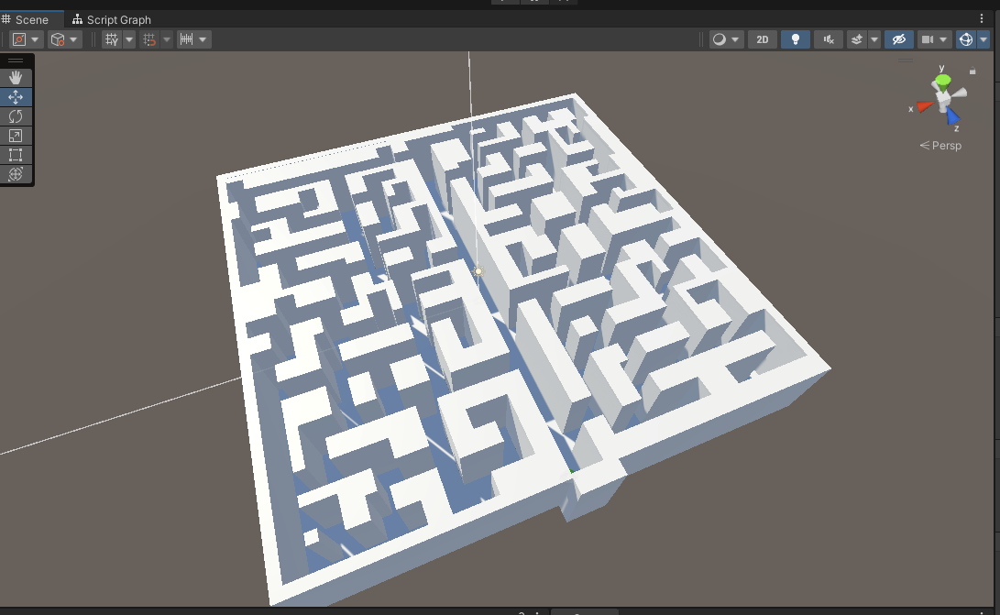
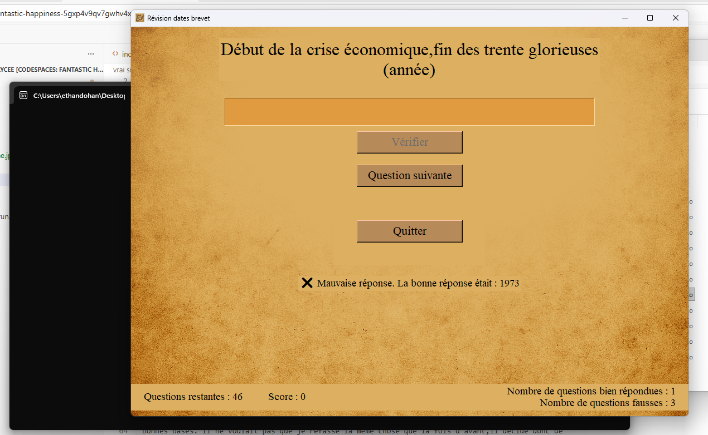
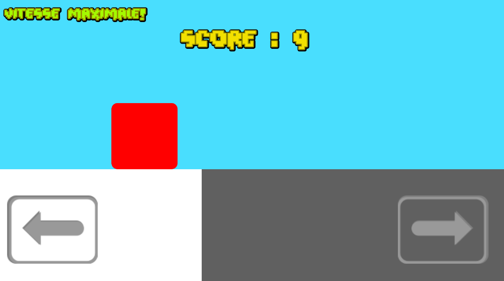

J'ai toujours aimé créer des choses et, étant donné que les jeux vidéo sont l'une de mes passions,
je me suis demandé comment en créer.
J'ai commencé à me poser cette question quand j'étais en CM1, à peu près.
Je ne le savais pas encore, mais j'allais bientôt découvrir une nouvelle passion...
J'avais déjà fait du Scratch auparavant, mais j'étais sûr que je ne pourrais jamais faire
grand-chose avec quelque chose d'aussi limité.
J'ai cherché un peu et j'ai trouvé un logiciel qui me paraissait convenir.
Je ne sais pas pourquoi, mais au lieu de télécharger un logiciel de codage ou un
game engine, j'ai téléchargé un logiciel de modélisation 3D : Blender.
Logo de Blender
Je me suis un peu entraîné dessus et j'ai atteint un assez bon niveau, mais j'ai aussi compris que ce n'est pas comme ça que je créerais un jeu. Je me suis tourné tout d'abord vers Unreal Engine, qui est difficile à comprendre et à faire tourner sur un PC. J'ai aussi essayé Unity, mais je n'avais pas encore d'assez bonnes bases en codage.


Logos de Unity et d'Unreal Engine
J'ai donc installé un éditeur Python et pris des cours quand je le pouvais. Sinon, je regardais des vidéos YouTube dans le but d'apprendre les bases du codage. En effet, Python est connu pour être l'un des meilleurs langages pour débuter.
Logo de Python
Il permet surtout de travailler la logique et est beaucoup moins axé sur la partie graphique, ce qui évite trop d'informations superflues pouvant perdre les débutants. Après quelques mois d'entraînement au codage sur Python, j'ai découvert un add-on qui venait de sortir sur Blender : Armory 3D. Il était désormais possible de créer des jeux vidéo en visual scripting. Pour faire simple, le visual scripting est un langage de code graphique : on relie des boîtes entre elles pour créer du code, chaque boîte représentant une partie du code.

Visual scripting sur Blender
L'avantage du visual scripting est qu'il est facile à comprendre et beaucoup moins limité que Scratch. Je n'ai pas fait grand-chose en visual scripting sur Blender, si ce n'est un début de jeu en première personne dans lequel le joueur doit s'échapper d'un labyrinthe.
Pendant les grandes vacances de 2024, je m'inscris à un stage de codage où, cette fois, pour mon plus grand bonheur, je découvre que le visual scripting existe aussi sur Unity, qui est un moteur de jeu, contrairement à Blender qui est un logiciel de modélisation 3D. Durant ce stage, je crée sans difficulté un petit jeu, mais je ne le considère pas comme quelque chose dont je peux être vraiment fier, car tous les modèles 3D m'étaient fournis à l'avance et je devais simplement suivre des instructions pour le code. Après le stage, je ressors mon projet de labyrinthe et le continue, cette fois sur Unity, où le visual scripting est bien plus poussé que sur Blender. J'avance un peu, puis j'arrête rapidement par manque d'inspiration.
 |
 |
|---|
Aperçus du jeu codé pendant le stage
 |
 |
|---|
Aperçus de mon jeu avec le labyrinthe
Pendant environ cinq mois, je ne fais pas beaucoup de code, si ce n'est un stage d'une semaine en décembre où je réapprends les bases de Python. Mais un élément va changer la donne en avril. C'était mon année de troisième, et qui dit année de troisième dit Brevet. Quelques jours avant le deuxième brevet blanc, en février, je me rends compte que je déteste apprendre les dates d'histoire-géographie. Je décide alors de créer un programme pour réviser toutes les dates. Je code la logique en moins d'une heure, mais passe plusieurs jours sur la partie graphique. Python n'est vraiment pas fait pour cela. Finalement, le programme m'a servi pour le vrai brevet.

Aperçu de mon programme pour les révisions du brevet
Après le brevet, je fais une nouvelle semaine de stage au même endroit qu'en décembre. Les cours se font en petits groupes de deux ou trois personnes, et cette fois-ci, j'étais seul avec un autre élève. Le professeur se souvenait que j'avais déjà de bonnes bases et a donc décidé de m'aider à créer un vrai jeu. Durant cette semaine, je découvre le moteur de jeu Godot, j'apprends les bases du GDScript et je crée mon propre jeu. Le but est de ne pas toucher les plateformes qui noircissent et de réaliser le meilleur score. Pour remercier le professeur et l'institution, j'ai ajouté un skin avec leur logo.

Aperçu du jeu créé pendant le stage : Crazy Cube
Après ce stage, je mets le jeu sur itch.io : https://lord-retrace.itch.io/crazy-cube. J'y apprends une méthode d'export que je trouve idéale pour les petits jeux : les Progressive Web Apps (PWA).
J'ai également exporté mon programme de révision du brevet en PWA : RévisionDNB. Nous arrivons maintenant à mon année de seconde. J'ai alors créé une application pour réviser les définitions de physique-chimie, synchronisées automatiquement depuis un dépôt GitHub.
Vous pouvez trouver cette application ici : Révision Physique-Chimie. Il n'y a pas encore de graphismes par manque de temps, mais j'espère pouvoir en ajouter plus tard.
| Galerie de mes projets | Les logiciels utilisés |
|---|